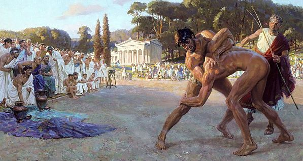
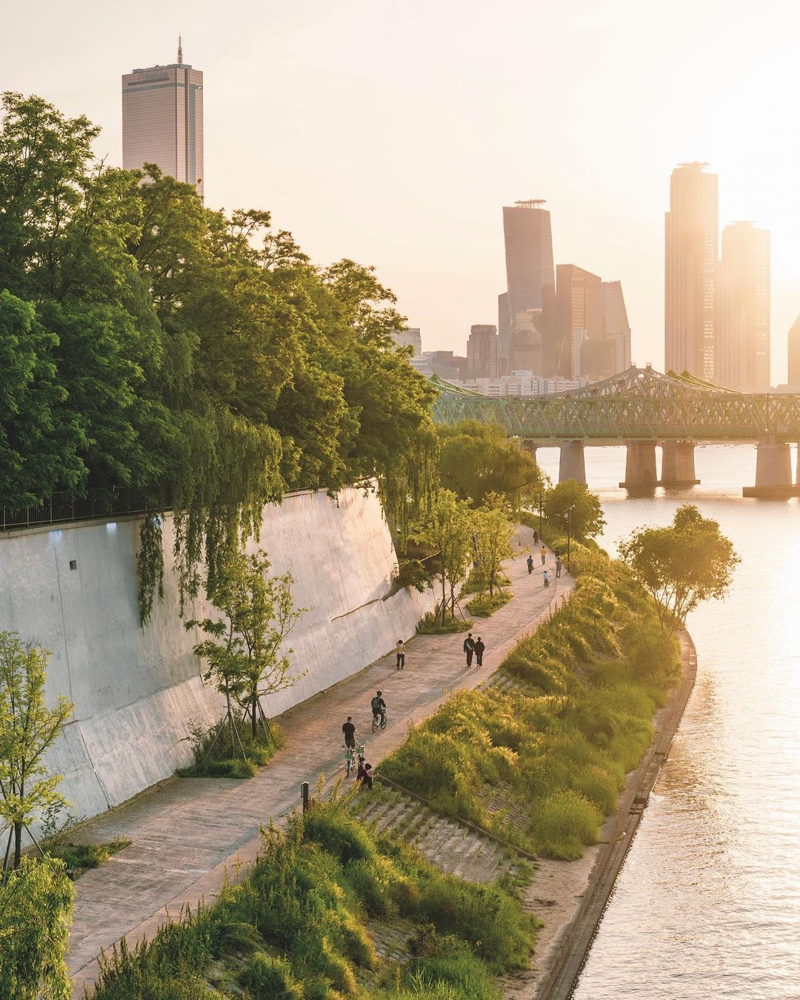

The folly of pride.
Winning necessarily comes down to luck or the defeat of an inferior. Both are nothing to be proud of. Therefore, we should not compete for the sake of being better than others, but only to improve ourselves and help others do the same.
Diogenes Visits Olympia and Confronts an Athlete:
[…] ‘And who’, I asked, ‘did you have for your opponents?’
‘The foremost men of Greece and Asia.’
‘And were they stronger than you, or much the same, or weaker?’
‘Stronger.’
‘You say that they were stronger, and yet they were defeated by you?’
‘They were of the same strength.’
‘And how could you defeat people of equivalent strength unless they were weaker than you? Or are you the only person who is capable of doing that? Well? In point of fact, there is no one who doesn’t prevail over people of inferior strength. You should say farewell, then, to all of this, Cicermos, and no longer compete in the pancration, or against men to whom you will be inferior before long, when you arrive at old age. You should turn instead to things of true value, and learn to practise endurance, not under the blows of puny men, but under those of fate, and not under the blows that come from leather thongs and fists, but under those of poverty, of disrepute, of low birth, of exile. For when you have trained yourself to think light of these things, you will live a happy life and meet a tolerable death; but if you pursue them, you will live in misery.’ As I explained these things to him, he threw his palm branch to the ground, pulled the crown from his head, and had the strength to call off his journey.’ —Diogenes of Sinope (404 – 323 BC)
—Image: “Pankration” by Tom Lovell ()
A trophy or atrophy?
Resist comparing yourself to others not only in sports, but in all aspects of life: career, wealth, fame, et cetera. An expensive house, a horde of followers, or any other inanimate concepts which are given artificial prestige mean nothing in the grand scheme of things.

—Image: “August 31, 2012 Magnificent CME” by NASA ()
The chase for prestige hinders living in the moment because such superficial mindsets turn everything into a contest. One can climb trees to elevate oneself, and one can climb trees to elevate oneself above another. The former is about its inherent fun, beauty, and liberation, the latter about the ability to say “I am the best.” But what good does that do? What joy is shared? Play becomes work. The activity loses purity. But, however much I would like to simplify it to one commandment: “Just play!”, I can't. For when does play turn competitive? I have a hard time grappling with this question because I too find running contests to be exhilarating and satisfying, I too play chess to win—an aspect inherently inextricable. Conundrum. Where do we go from here?
—Stand-up comedy fragment: It's Bad For Ya (2007), George Carlin on playing ().
“Tom said to himself that it was not such a hollow world, after all. He had discovered a great law of human action, without knowing it -- namely, that in order to make a man or a boy covet a thing, it is only necessary to make the thing difficult to attain. If he had been a great and wise philosopher, like the writer of this book, he would now have comprehended that Work consists of whatever a body is obliged to do, and that Play consists of whatever a body is not obliged to do. And this would help him to understand why constructing artificial flowers or performing on a tread-mill is work, while rolling ten-pins or climbing Mont Blanc is only amusement. There are wealthy gentlemen in England who drive four-horse passenger-coaches twenty or thirty miles on a daily line, in the summer, because the privilege costs them considerable money; but if they were offered wages for the service, that would turn it into work and then they would resign.” —Mark Twain
Friendly competition.
Go ahead and enjoy a friendly game of chess or rugby and whatnot, but curb your pride when winning and reduce the excessive commodification thereof. Instead, try to appreciate the strategical beauty on both sides. “Hold your horses there, buddy, winning means I've worked harder than others, so I deserve praise and shiny objects.” On the surface this seems like a reasonable objection, however, it always boils down to luck both in nature and nurture . For instance, many variables can be attributed to DNA: some people are just lucky in being taller or in being considered more attractive given their culture. Others have had more nurturing parents or teachers, and yet another group lack a moral compass so they don't mind becoming successful on the backs of others through exploitation or deceit.
“I sit on a man's back choking him and making him carry me, and yet assure myself and others that I am sorry for him and wish to lighten his load by all means possible… except by getting off his back.” —Leo Tolstoy
Before assigning blame and getting all riled up (myself included) it's good to remind oneself that no matter how you roll the dice, the debate ultimately ends up at free will, which doesn't exist. We are not the first cause of anything, not even our thoughts—another distinct contentious topic.
No free will.
Case in point, you will not choose the next word that comes to your mind, nor the next, not even the next one after, ad infinitum. Words just pop into our minds, we never choose which ones. Therefore, if we don't choose our thoughts we're not the first cause of anything. One may have kicked the pebble causing it to move, but the decision to do so was mere happenstance; you did not choose to think “kick the pebble”. The thought merely appeared. Things just happen and free will is an illusion making us think we're in control. Many find this realization disconcerting, but it needn't be *.
“Hold on, if there's no free will, why then don't we just start killing people?” Where does this needlessly negative reasoning come from so often? Why would free will be the reason stopping us from murder? Instead, we could equally easily ask: “If there's no free will, why don't we just help people?” Anyway, many dislike the idea of no free will because it robs them of the only reason by which they can convince themselves that they deserve their pride and riches: that they are the prime factor responsible for their success. Unfortunately for them, the variables that cause some to work harder than others is out of their hands. Pride is therefore just as ridiculous as nationalism: why be proud of something you weren't responsible for?
– – – – – –
* Be sure to watch this source if the thought of having no free will is unsettling.
Pan-capitalism.
Regarding the commodification of athleticism and nearly everything else for that matter . A system is gravely flawed if athletes—whose main purpose is advertisement, gambling, and entertainment, i.e., “panem et circenses” —are paid exorbitant amounts of money, while teachers, medical professionals, and cleaning personnel who serve a significantly more important purpose, barely get by in comparison. Yeah yeah, supply and demand and all that. Well maybe, just maybe that way of valuing everything is profoundly unethical. Just as slavery went from being normal to despicable not so long ago, perhaps we should do away with pan-capitalism as well, lest poisonous profit motives destroy us. While having raised millions from poverty, it has downtrodden millions into reaching for antidepressants, alcohol, consumerism, and other desperate escape mechanisms. The rat race is not worth competing in because it turns people miserable, even if they think they aren't. How many highschool students graduate with an increased sense of curiosity and vigor for learning? What's the percentage of people waking up most mornings with the same excitement as children? The minority. An extremely disappointing observation. Paraphrasing my friend V. V.'s* striking realization: “It's absurd that we've normalized seeing our colleagues more than friends and family.” She's right. Life is not worth living when work dominates play.
What's the point of material abundance when our endless quest for growth is destroying humanity's only habitable environment: “MIT Predicted in 1972 that society will collapse this century. New research shows we’re on schedule.” Screw that. I want posterity to wake up excited every morning, ready to learn and explore, to play and work together towards a virtuous purpose. Therefore, to prevent life in The Matrix there are many things we should do. Rethinking education and the economic system comes to the fore. But equally important and probably the most quickly feasible: we need to… no, we will become friends with nature again! Let's surround ourselves with trees in all their glory. Radical reforestation! Ecomodernism! Solarpunk!
—Image: Atomhawk Solarpunk art challenge submission, by Avishek Banerjee ().
—Image: Lush greenery around the embankment of Nodeulseom, Han River, Seoul; 노들섬은 언제나 행복 그 자체, by sweetviolet___ ().
– – – – – –
* Also goes by the pseudonym SaluFish.
Natural collaboration vs. artificial competition.
“Without competition we'd still be single celled organisms.” —House M.D. ()
True. But as far as we know we're the only species able to scrutinize our motives and ask the question: “Haven't we evolved enough?” Well, haven't we? Healthy organisms generally grow in equilibrium with their surroundings. Except for us humans despite having evolved “rational” minds. Given the sorry mental state of humanity we're in dire need of natural collaboration instead of artificial competition. We have plenty resources to survive many times over—to the point we need to throw food away—yet we're afflicted with an indomitable appetite*, glut, especially white Westerners. Consequently it comes as no surprise that the wealth gap is increasing evermore. The hoi polloi are needlessly competing against one another while the rich bathe in luxury because of artificial scarcity.
“The world has become a shopping mall.” —Jacques Leenaert, globetrotter.
By artificial scarcity I encompass planned obsolescence, advertising, fashion, hoarding, et cetera. Many of today's products could be made to last a lifetime, but they aren't because that's not profitable. Hence why fashion has us chasing new clothes indefinitely. Hence why the supply of diamonds is being suppressed because they would otherwise be worthless given their abundance †. Hence why Apple opposes the right to repair so we buy new phones. Simultaneously our consumerist society steers us to compare these trinkets between ourselves, yet another form of competition: “He has the newest iPhone so I want one too.” An utterly pointless despicable state of affairs. I can't stress this enough, such a soul crushing system has to be upended because we've gotten to the point where science and technology can allow everyone to survive and thrive without competition. Where there's a: ☐ will, there's a: ☑ way!
“In a world of true abundance you shouldn't have to work to justify your life.” —Sam Harris
– – – – – –
* Greed: a gradually developing insidious mind disease I'm recovering from as well.
† Diamonds are worthless regardless their price; just making a point.
Arbeit macht nicht frei.
—Image: Once Upon A Time In Hobbiton, by DaleComte .
The Shire in Lord of the Rings; a life primarily consisting of tending one's garden, raising a family, going for a stroll in nature, and that's it. Simple living. If only such modesty was ubiquitous. Having no ambition is a virtue, yet such philosophies are unduly associated with hippies, laziness, or being uncultivated. They aren't, but so what if they are? As long as people aren't causing harm to others or the environment let them do or be what they want.
Conversely, does the phrase “Arbeit macht frei” ring any bells? We absolutely despise what it represents even though we're living our lives in accordance to that slogan. We eat-sleep-work-repeat without a care for whether the work or what we buy has any devastating effect on both animals—including humans—and the environment. Imagine a bad thing and I guarantee that 80% of the time some rich ambitious white prick will be more or less responsible. Therefore, more Hobbits please! Be that as it may, obviously we can't roll back technology, nor should we if we could. Mass production or affordable: surgery, telescopes, books, climbing gear, skateboards, glasses, planes, musical instruments, etc. all sprang forth from the ambitious as well. These supremely wonderful things shouldn't be taken for granted. So, what's the moral of the story? Do less, share more!
My gut tells me that a good amount would prefer such a tranquil life, but they can't because society doesn't allow for it. Why? Land and housing prices. The only reason why the majority of Western people work full-time is being able to afford housing. There's barely any middle-ground; go big or go home. Subsequently, to make up for the frustration it causes, and the disconnect with (our) nature, we act out through superficialities as aforementioned. The ironic sad thing is that we're spending most of our young and vital life working to pay off a house we're “never” in because we're at work to pay off the house. Moreover, during the occasional free time many prefer to travel or attend events. This lifestyle makes sense if one's occupation is more often experienced as “play” instead of “work”—a rare occurrence. What the hell is wrong with us?
“If you have a garden and a library, you have everything you need.” —Marcus Tullius Cicero
Part-time work.
Part-time work should be the norm. For one, it leaves us with more free time, exactly what most yearn for while working. No. Not to be filled with mindless entertainment, because we are Amusing Ourselves to Death , but with more fulfilling activities. My hypothesis is that less work will produce a gentler populace willing to volunteer their time towards more altruistic causes: teaching properly, raising children properly, picking up trash, building tree houses. I could go on really; the world truly becomes your oyster with some money and plenty of time—as opposed to the often glamorized but flawed “lots of money, scanty time” lifestyle.
—Video: Farm League – The Cinder Cone .
Secondly, it alleviates the unemployment and shitty job problem. More people doing less work means more work left over while the burden is shared. Rarely a kid dreams of becoming a janitor, but shit needs to be cleaned which is tough and equally important as doctors, for sprawling germs spread disease like wildfire. Obviously this reasoning doesn't apply to all occupations. Surgeons don't generally “I'm done for today” during prolonged surgeries, nor would they want to since extensive practice is key and the job is pretty amazing. I'm not even against full-time work as a general rule. Hard work is remarkably satisfying given the right circumstances, type of work, and who I'm working for. However, what I am against is unfulfilling or unethical work. Once again: if one doesn't get up most mornings with a modicum of excitement, then that's unfulfilling wasted time. If one works a job that's a net negative on society, e.g., McDonalds, Facebook, hedge funds, factory farms, et cetera, then that's unethical wasted time. Now paint a picture with a populace working part-time. There would be more ethical jobs and the difficult currently unglamorous jobs would become more bearable.
That's why I'm a part-time lifeguard. Full-time would be a too wearisome and monotonous experience, but part-time I'm thoroughly enjoying the work and my colleagues! It offers me plenty time to sleep, to exercise, to see friends, to keep teaching skateboarding, to keep being a janitor in short bursts while working only outside surrounded by trees, to possibly simultaneously pursue a university degree, and to rent a cheap one-room student flat—tiny house living . It may not be a life for everyone, nor do I expect that—I've always been a bit of a goof. All I'm asking for is to please drop your pride more often. Stop comparing. History won't remember you favorably anyway, unless you help create a world where anyone can enjoy this privilege of being rich in time and creativity. Individual contributions do matter ! We need to collectively wake up with a lust for life. I know I am since resigning the chase for profit. I am me once again. I am alive! Wunderbar!
“Nobody ever figures out what life is all about, and it doesn't matter. Explore the world. Nearly everything is really interesting if you go into it deeply enough.” ―Richard P. Feynman
♔
Sources.
- Robin Hard: Diogenes the Cynic: Sayings and Anecdotes, with Other Popular Moralists, §648.
- Tom Lovell: “Referee Watches Greek Wrestlers In Ancient Olympic Games”.
- NASA: August 31, 2012 Magnificent CME.
- George Carlin: It's Bad for Ya!
- Mark Twain: The Adventures of Tom Sawyer.
- Derek Muller: Veritasium – Is Success Luck or Hard Work?
- Sam Harris: “Free Will”.
- Leo Tolstoy: What Then Must We Do?
- Bill Hicks: Marketing and advertising.
- Wikipedia: Bread and circuses.
- Vice: 1972 study predicted world collapse by 2040 - New research shows we're right on track.
- Wachowskis: The Matrix (1999).
- ecomodernism.org: An Ecomodernist Manifesto – A manifesto to use humanity's extraordinary powers in service of creating a good anthropocene.
- Wikipedia: Solarpunk.
- Avishek Banerjee: Atomhawk Solarpunk art challenge submission.
- sweetviolet___: 노들섬은 언제나 행복 그 자체.
- House M.D.: S04 E02, The Right Stuff.
- Sam Harris: Making Sense with Sam Harris #105 - Live with Richard Dawkins and Matt Dillahunty, quote at 1h 9m 10s.
- DaleComte: Once Upon A Time In Hobbiton.
- Neil Postman: Amusing Ourselves to Death: Public Discourse in the Age of Show Business.
- Farm League: The Cinder Cone.
- Kirsten Dirksen : We The Tiny House People (Documentary): Small Homes, Tiny Flats & Wee Shelters.
- Nicky Case: “Fireflies”.
Comments.
Reply on Telegram.
← ⌂